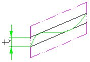
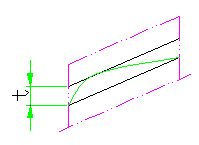
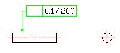
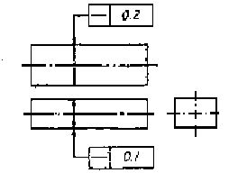
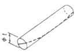
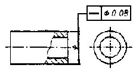

진 직 도
1.표면의 요소로서 선의 진직도 공차
|
▷ 공차역은, 지정된 방향의 절단면 내에 서 t만큼떨어진 두 개의 평행한 직선 사이에 끼인 영역이다.  |
▷ 지시선의 화살표로 나타낸 면을 공차기입틀을 표시한 초형의 투상면에 평행한 임의의 평면으로 절단했을 때, 그 절단면에 나타난 선이, 화살표 방향으로 0.1㎜만큼 떨어진 두개의 평행한 직선 사이에 있어야 한다.
|
|
▷ 지시선의 화살표로 나타내는 원통면 위이 임의의 모선은, 그 원통의 축선을 포함하는 평면내에 있어서 0.1㎜만큼 떨어진 두개의 평행한 직선 사이에 있어야 한다.
|
|
|
▷ 특히, 축 대칭물의 형체에 대하여는, 그 축선을 포함하는 평면 위에 있어서의 것이다.  |
|
|
▷ 지시선의 화살표로 나타내는 원통면의 임의의 모선 위에서 임의로 선택한 길이 200㎜의 부분은 축선을 포함하는 평면내에 있어서 0.1㎜만큼 떨어진 두개의 평행한 직선 사이에 있어야 한다.  |


2.축선의 직진도 공차
|
▷ 공차역의 지정이 서로 직각인 두 방향에서 실시되고 있는 경우에는 , 이 공차역은 단면 t1 × t2의 직6면체안의 영역이다.
|
▷ 이 각봉의 축선은, 지시선의 화살표로 나타내는 방향으로 각각 0.1 ㎜및0.2 ㎜의 나비를 갖는 직6면체 내에 있어야 한다.  |
|
▷ 공차역을 표시하는 수치 앞에 기호 ø가 붙어있는 경우에는 이 공차역은 지름 t의 원통안의 영역 이다. |
▷ 원통의 지름을 나타내는 치수에 공차 기입틀이 연결되어 있는 경우에는, 그 원통의 축선은 지름 0.08 ㎜의 원통내에 있어야 한다.  |